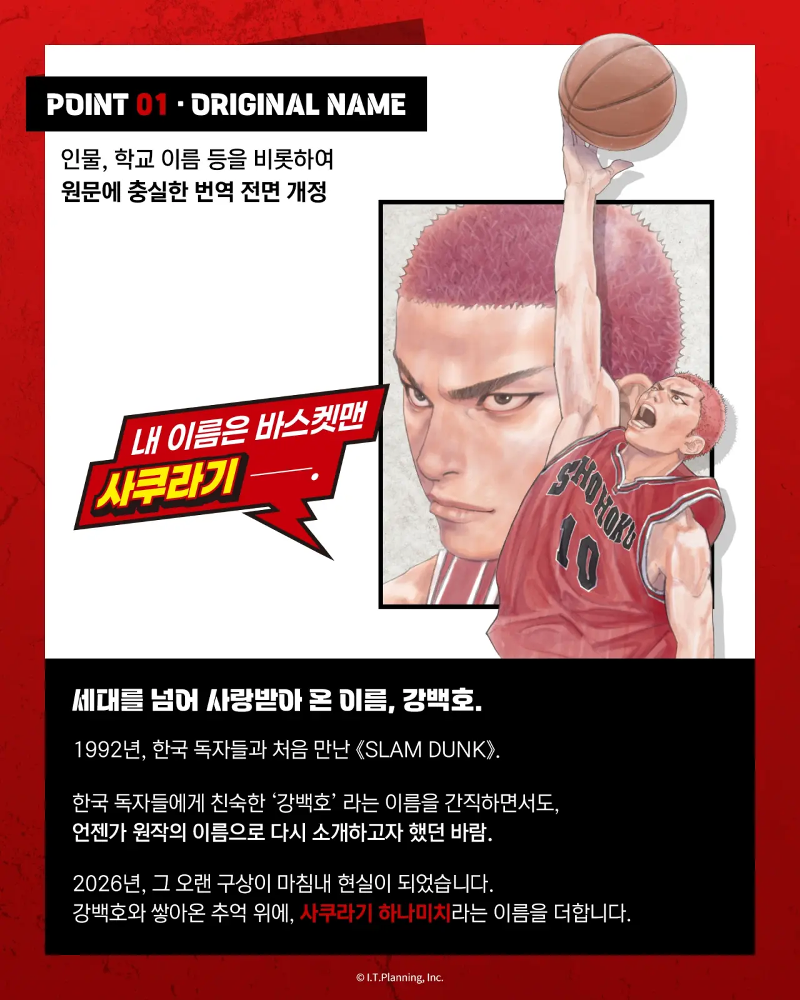
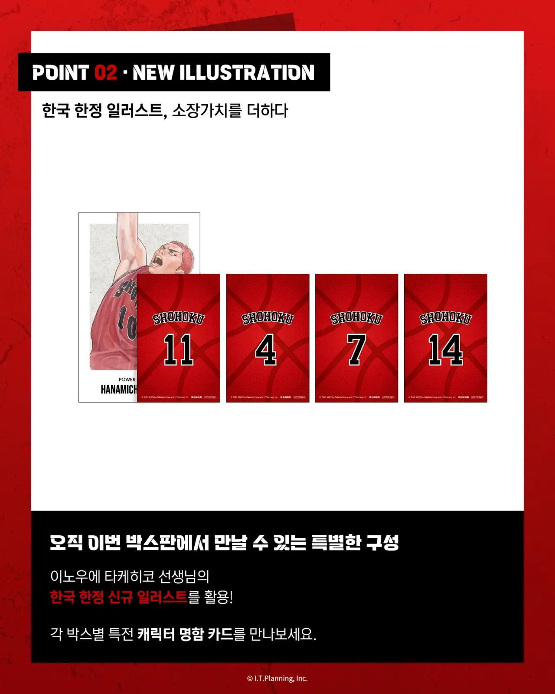

등장인물 , 학교 이름 등
일본어 원문을 그대로 번역한 신 개정판 발매 예정
ex) 강백호 -> 사쿠라기 하나미치


등장인물 , 학교 이름 등
일본어 원문을 그대로 번역한 신 개정판 발매 예정
ex) 강백호 -> 사쿠라기 하나미치
나도 일본 이름으로 하는게 좋다고 생각함. 배경이 일본인걸 뻔히 아는데 굳이 이름만 한국식인게 오히려 더 어색한거같음. 슬램덩크는 한국식 이름이 너무 친숙한탓에 싫어하는 사람도 많을거같긴 하지만...
애니로는 사쿠라기 하나미치
만화로는 강백호
슬램덩크 슈퍼를 만들어
일본판 이름은 처음 듣는데 너무 오래 강백호로 알고 지내서 그런지 많이 낯설게 느껴지네 ㅋㅋ
이야~ 안사야지 집에 공간이 없다
그래서 얼마냐고!!
누군가는 원하겠지 나는 아님
슬램덩크가 이름빨 없으면 그게 슬램덩크냐 쿠로코의 농구지
뭔 개소리야 슬램덩크가 뭔 작중인물 이름빨이야
잉 로컬라이징이 좋은데
노잼
그냥 후속연재를 해라.
이건뭐 사골게리온을 뛰어넘네
ㄹㅇ ㅅㅂ ㅋㅋ
지금보니까 강백호 이름이 벚꽃나무꽃길이네?
농구만화 스라무단쿠!
슬램덩크와는 다르다!
쇼호쿠 말고 다른 학교애들은 일본어 이름이면 잘 모를거같음 센도 가 윤대협이었나 그정도나 알아먹지 ㅋㅋ
영포티들 거품 물겠네 ㅋㅋ
난 원작 그대로 해야된다고 어릴때부터 생각했음. 어색함도 줄이고 문화적 차이도 이해해야됨.
여기서 갈리치기 각을 또 보네 ㅋㅋ
그러긴하지 실제 굿즈 수요는 그짝이니까